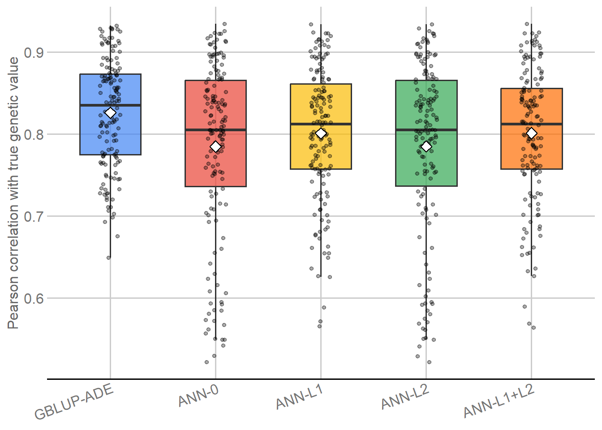
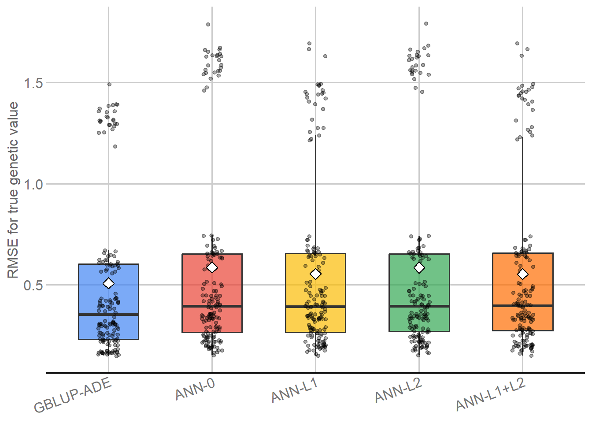

Last updated: 2026-09-08
Checks: 7 0
Knit directory:
Genomic-Prediction-using-Regularized-Artificial-Neural-Networks/
This reproducible R Markdown analysis was created with workflowr (version 1.7.2). The Checks tab describes the reproducibility checks that were applied when the results were created. The Past versions tab lists the development history.
Great! Since the R Markdown file has been committed to the Git repository, you know the exact version of the code that produced these results.
Great job! The global environment was empty. Objects defined in the global environment can affect the analysis in your R Markdown file in unknown ways. For reproduciblity it’s best to always run the code in an empty environment.
The command set.seed(20260821) was run prior to running
the code in the R Markdown file. Setting a seed ensures that any results
that rely on randomness, e.g. subsampling or permutations, are
reproducible.
Great job! Recording the operating system, R version, and package versions is critical for reproducibility.
Nice! There were no cached chunks for this analysis, so you can be confident that you successfully produced the results during this run.
Great job! Using relative paths to the files within your workflowr project makes it easier to run your code on other machines.
Great! You are using Git for version control. Tracking code development and connecting the code version to the results is critical for reproducibility.
The results in this page were generated with repository version 97010e7. See the Past versions tab to see a history of the changes made to the R Markdown and HTML files.
Note that you need to be careful to ensure that all relevant files for
the analysis have been committed to Git prior to generating the results
(you can use wflow_publish or
wflow_git_commit). workflowr only checks the R Markdown
file, but you know if there are other scripts or data files that it
depends on. Below is the status of the Git repository when the results
were generated:
Ignored files:
Ignored: .Rhistory
Ignored: .Rproj.user/
Ignored: .github/
Ignored: .local/
Ignored: code/legacy/
Ignored: data/dados_reais/Fenótipos 2014_2015_2016_C.arabica (1).xlsx
Ignored: data/dados_reais/Fenótipos 2014_2015_2016_C.arabica.xlsx
Ignored: data/dados_reais/FiltStep1_minQ10.0_minDP3_DPrange15-maxMeanDepth750_miss0.4_maf0.01_mac1_EMB_291701_SNPs_Raw.vcf.012.012
Ignored: data/dados_reais/FiltStep1_minQ10.0_minDP3_DPrange15-maxMeanDepth750_miss0.4_maf0.01_mac1_EMB_291701_SNPs_Raw.vcf.012.012.indv
Ignored: data/dados_reais/FiltStep1_minQ10.0_minDP3_DPrange15-maxMeanDepth750_miss0.4_maf0.01_mac1_EMB_291701_SNPs_Raw.vcf.012.012.pos
Ignored: data/dados_reais/FiltStep1_minQ10_minDP3_DPrange15-750_miss0.4_maf0.01_mac1_EMB_291701_filt1_snps_RAW.012.indv.txt
Ignored: data/dados_reais/FiltStep1_minQ10_minDP3_DPrange15-750_miss0.4_maf0.01_mac1_EMB_291701_filt1_snps_RAW.012.pos.txt
Ignored: data/dados_reais/FiltStep1_minQ10_minDP3_DPrange15-750_miss0.4_maf0.01_mac1_EMB_291701_filt1_snps_RAW.012.txt
Ignored: data/dados_reais/Rótulos C. arabica_Proj_Piloto.xlsx
Ignored: data/dados_reais/Rótulos Novos SNPs.xls
Ignored: data/dados_reais/dados_cafe.xlsx
Ignored: data/dados_reais/fpls-09-01934.pdf
Ignored: data/dados_reais/geno_real.rds
Ignored: data/dados_reais/pheno_real.rds
Ignored: data/dados_reais/plants-13-01876-v2.pdf
Ignored: data/dados_reais/pos_geno_real.rds
Ignored: renv/library/
Ignored: renv/staging/
Note that any generated files, e.g. HTML, png, CSS, etc., are not included in this status report because it is ok for generated content to have uncommitted changes.
These are the previous versions of the repository in which changes were
made to the R Markdown
(analysis/simulated_data_comparison.Rmd) and HTML
(docs/simulated_data_comparison.html) files. If you’ve
configured a remote Git repository (see ?wflow_git_remote),
click on the hyperlinks in the table below to view the files as they
were in that past version.
| File | Version | Author | Date | Message |
|---|---|---|---|---|
| html | 3a00d2a | WevertonGomesCosta | 2026-09-08 | Publish audited M05 comparison artifacts |
| Rmd | ff4cb49 | Weverton Gomes da Costa | 2026-09-08 | Preserve M05 comparison output ordering |
| Rmd | b7c16da | Weverton Gomes da Costa | 2026-09-08 | Refactor M05 comparison reader flow |
| html | c8124ab | WevertonGomesCosta | 2026-09-02 | Refresh integrated M01-M05 reproducibility metadata |
| html | 4d4e2c3 | WevertonGomesCosta | 2026-09-02 | Rebuild M05 after editorial revision |
| Rmd | 07004ea | WevertonGomesCosta | 2026-09-02 | Complete M05 model comparison editorial revision |
| html | 217e778 | WevertonGomesCosta | 2026-09-01 | Complete reader-first didactic cleanup |
| Rmd | dea5684 | github-actions[bot] | 2026-08-31 | Simplify tutorials while preserving audit contracts |
| html | 7a3fbcd | WevertonGomesCosta | 2026-08-31 | Refresh tutorial site after final build |
| Rmd | d2d548c | WevertonGomesCosta | 2026-08-31 | Refactor model comparison as tutorial |
| html | d2d548c | WevertonGomesCosta | 2026-08-31 | Refactor model comparison as tutorial |
| html | f228245 | WevertonGomesCosta | 2026-08-31 | Publish reader-focused simulated workflow |
| Rmd | 1e0bc61 | WevertonGomesCosta | 2026-08-31 | Refine canonical model comparison for readers |
| html | fa907f6 | WevertonGomesCosta | 2026-08-28 | Publish audited workflowr documentation |
| Rmd | 35ac197 | WevertonGomesCosta | 2026-08-28 | Explain comparison calibration metrics |
| Rmd | bf57d7a | WevertonGomesCosta | 2026-08-28 | Document canonical model-comparison inputs |
| Rmd | 0b8a4f6 | WevertonGomesCosta | 2026-08-28 | Revise canonical workflow documentation and scientific narrative |
| html | 0b8a4f6 | WevertonGomesCosta | 2026-08-28 | Revise canonical workflow documentation and scientific narrative |
| html | f7779fd | WevertonGomesCosta | 2026-08-27 | Build site. |
| Rmd | 3290362 | Weverton Gomes da Costa | 2026-08-27 | audit: verify identical outer-assessment individuals in model comparison |
| Rmd | 9da8016 | Weverton Gomes da Costa | 2026-08-27 | refactor: promote model comparison to workflowr module |
This module closes the simulated-data workflow by comparing GBLUP-ADE with the four ANN variants on exactly the same outer-assessment individuals defined in M02.
The comparison uses only predictions already produced in M03 and M04. No model is refitted and no hyperparameter is selected here. The known true simulated genetic value is the primary evaluation target; the observed phenotype is reported as a secondary target because it also contains residual variation.
Three principles define the comparison:
Scenario x outer split tasks;library(knitr)
library(ggplot2)
library(ggthemes)
GBLUP_RESULTS_RDS <-
"output/simulated/gblup/simulated_gblup_ade_results.rds"
GBLUP_PREDICTIONS_RDS <-
"output/simulated/gblup/simulated_gblup_ade_predictions.rds"
ANN_RESULTS_RDS <-
"output/simulated/ann/final/simulated_ann_results.rds"
ANN_PREDICTIONS_RDS <-
"output/simulated/ann/final/simulated_ann_predictions.rds"
gr <- readRDS(GBLUP_RESULTS_RDS)
gp <- readRDS(GBLUP_PREDICTIONS_RDS)
ar <- readRDS(ANN_RESULTS_RDS)
ap <- readRDS(ANN_PREDICTIONS_RDS)
expected_ann_models <- c(
"ANN_0",
"ANN_L1",
"ANN_L2",
"ANN_L1_L2"
)
model_order <- c(
"GBLUP_ADE",
expected_ann_models
)
input_summary <- data.frame(
Object = c(
"GBLUP-ADE task results",
"GBLUP-ADE held-out predictions",
"ANN task-by-model results",
"ANN held-out predictions"
),
Rows = c(
nrow(gr),
nrow(gp),
nrow(ar),
nrow(ap)
),
stringsAsFactors = FALSE
)
input_summary |>
knitr::kable(
format = "html",
caption = "Saved results entering the final model comparison",
row.names = FALSE,
table.attr = 'class="table table-striped table-hover table-bordered"'
)| Object | Rows |
|---|---|
| GBLUP-ADE task results | 150 |
| GBLUP-ADE held-out predictions | 30000 |
| ANN task-by-model results | 600 |
| ANN held-out predictions | 120000 |
The inputs contain 150 GBLUP-ADE task results, 600 ANN task-by-model results, 30,000 GBLUP-ADE held-out predictions, and 120,000 ANN held-out predictions. The comparison therefore operates on completed model outputs rather than reconstructing either modeling branch.
The next block checks the observed comparison structure directly. Prediction records are aligned by scenario, repetition, outer fold, split identifier, task identifier, and individual identifier before their targets are compared.
comparison_keys <- c(
"Scenario",
"Repetition",
"Fold",
"SplitID",
"TaskID",
"ID"
)
model_structure_rows <- vector(
"list",
length(model_order)
)
for (model_index in seq_along(model_order)) {
model <- model_order[model_index]
if (model == "GBLUP_ADE") {
result_data <- gr
prediction_data <- gp
} else {
result_data <- ar[
ar$Model == model,
,
drop = FALSE
]
prediction_data <- ap[
ap$Model == model,
,
drop = FALSE
]
}
predictions_per_task <- as.integer(
table(prediction_data$TaskID)
)
model_structure_rows[[model_index]] <- data.frame(
Model = model,
Tasks = length(unique(result_data$TaskID)),
Predictions = nrow(prediction_data),
Min_predictions_per_task = min(predictions_per_task),
Max_predictions_per_task = max(predictions_per_task),
stringsAsFactors = FALSE
)
}
model_structure <- do.call(
rbind,
model_structure_rows
)
rownames(model_structure) <- NULL
model_structure |>
knitr::kable(
format = "html",
caption = "Observed task and assessment structure by model",
row.names = FALSE,
table.attr = 'class="table table-striped table-hover table-bordered"'
)| Model | Tasks | Predictions | Min_predictions_per_task | Max_predictions_per_task |
|---|---|---|---|---|
| GBLUP_ADE | 150 | 30000 | 200 | 200 |
| ANN_0 | 150 | 30000 | 200 | 200 |
| ANN_L1 | 150 | 30000 | 200 | 200 |
| ANN_L2 | 150 | 30000 | 200 | 200 |
| ANN_L1_L2 | 150 | 30000 | 200 | 200 |
g_targets <- gp[
, c(
comparison_keys,
"Observed_Phenotype",
"True_Genetic_Value"
)
]
paired_targets <- merge(
g_targets,
ap[
, c(
comparison_keys,
"Model",
"Observed_Phenotype",
"True_Genetic_Value"
)
],
by = comparison_keys,
suffixes = c("_GBLUP", "_ANN"),
sort = FALSE
)
paired_targets$Phenotype_difference <- abs(
paired_targets$Observed_Phenotype_GBLUP -
paired_targets$Observed_Phenotype_ANN
)
paired_targets$TrueG_difference <- abs(
paired_targets$True_Genetic_Value_GBLUP -
paired_targets$True_Genetic_Value_ANN
)
target_match <- aggregate(
cbind(
Phenotype_difference,
TrueG_difference
) ~ Model,
data = paired_targets,
FUN = max
)
target_match |>
knitr::kable(
format = "html",
digits = 12,
caption = "Maximum paired target difference relative to GBLUP-ADE",
row.names = FALSE,
table.attr = 'class="table table-striped table-hover table-bordered"'
)| Model | Phenotype_difference | TrueG_difference |
|---|---|---|
| ANN_0 | 0 | 0 |
| ANN_L1 | 0 | 0 |
| ANN_L1_L2 | 0 | 0 |
| ANN_L2 | 0 | 0 |
Every model contributes 150 tasks with 200 held-out predictions per task. The maximum paired differences in phenotype and true genetic value are zero, so the methods are evaluated on identical targets for identical held-out individuals.
The same metrics are used in M03, M04, and this final comparison.
mean(prediction - target);
values nearer zero indicate less mean prediction error.lm(target ~ prediction); values nearer one indicate better
proportional calibration, while the regression intercept also
contributes to calibration.For the paired contrasts below, positive performance advantage always
favors the ANN variant. Higher-is-better metrics use
ANN - GBLUP; lower-is-better metrics use
GBLUP - ANN; bias is compared by distance from zero; and
slope is compared by distance from one.
analysis_cols <- c(
"Scenario",
"Repetition",
"Fold",
"SplitID",
"TaskID",
"Model",
metrics
)
all_results <- rbind(
gr[, analysis_cols],
ar[, analysis_cols]
)
overall <- aggregate(
all_results[, metrics],
by = list(
Model = all_results$Model
),
FUN = mean
)
overall_genetic_display <- overall[
match(model_order, overall$Model),
c(
"Model",
"Genetic_Correlation",
"Genetic_RMSE",
"Genetic_MAE",
"Genetic_R2"
),
drop = FALSE
]
overall_genetic_display |>
knitr::kable(
format = "html",
digits = 4,
caption = "Primary overall performance against true genetic value",
row.names = FALSE,
table.attr = 'class="table table-striped table-hover table-bordered"'
)| Model | Genetic_Correlation | Genetic_RMSE | Genetic_MAE | Genetic_R2 |
|---|---|---|---|---|
| GBLUP_ADE | 0.8262 | 0.5080 | 0.4094 | 0.6802 |
| ANN_0 | 0.7848 | 0.5860 | 0.4687 | 0.5812 |
| ANN_L1 | 0.8011 | 0.5541 | 0.4448 | 0.6092 |
| ANN_L2 | 0.7851 | 0.5856 | 0.4683 | 0.5817 |
| ANN_L1_L2 | 0.8013 | 0.5537 | 0.4444 | 0.6097 |
overall_phenotype_display <- overall[
match(model_order, overall$Model),
c(
"Model",
"Phenotype_Correlation",
"Phenotype_RMSE",
"Phenotype_MAE",
"Phenotype_R2"
),
drop = FALSE
]
overall_phenotype_display |>
knitr::kable(
format = "html",
digits = 4,
caption = "Secondary overall performance against observed phenotype",
row.names = FALSE,
table.attr = 'class="table table-striped table-hover table-bordered"'
)| Model | Phenotype_Correlation | Phenotype_RMSE | Phenotype_MAE | Phenotype_R2 |
|---|---|---|---|---|
| GBLUP_ADE | 0.5699 | 0.9074 | 0.7326 | 0.3218 |
| ANN_0 | 0.5374 | 0.9596 | 0.7737 | 0.2635 |
| ANN_L1 | 0.5519 | 0.9340 | 0.7534 | 0.2846 |
| ANN_L2 | 0.5376 | 0.9592 | 0.7734 | 0.2638 |
| ANN_L1_L2 | 0.5520 | 0.9337 | 0.7531 | 0.2848 |
best_corr_model <- overall$Model[
which.max(overall$Genetic_Correlation)
]
best_rmse_model <- overall$Model[
which.min(overall$Genetic_RMSE)
]
best_r2_model <- overall$Model[
which.max(overall$Genetic_R2)
]
best_corr_value <- max(overall$Genetic_Correlation)
best_rmse_value <- min(overall$Genetic_RMSE)
best_r2_value <- max(overall$Genetic_R2)
ann_overall <- overall[
overall$Model %in% expected_ann_models,
,
drop = FALSE
]
best_ann_model <- ann_overall$Model[
which.max(ann_overall$Genetic_Correlation)
]
best_ann_correlation <- max(
ann_overall$Genetic_Correlation
)Across the 150 matched outer tasks, the highest mean genetic Pearson correlation is obtained by GBLUP_ADE (0.8262), the lowest mean genetic RMSE by GBLUP_ADE (0.5080), and the highest mean genetic \(R^2\) by GBLUP_ADE (0.6802). Among the ANN variants, ANN_L1_L2 has the highest mean genetic Pearson correlation (0.8013). These are descriptive results for the evaluated models and search spaces, not claims of universal model superiority.
The next figures show the 150 outer-task values for each method. Because the repeated cross-validation tasks overlap in their training and assessment samples, these distributions describe sensitivity to the held-out samples; they are not interpreted as 150 statistically independent replicates.
plot_results <- all_results
plot_results$Model <- factor(
plot_results$Model,
levels = model_order,
labels = c(
"GBLUP-ADE",
"ANN-0",
"ANN-L1",
"ANN-L2",
"ANN-L1+L2"
)
)
p_model_correlation <- ggplot(
plot_results,
aes(
x = Model,
y = Genetic_Correlation,
fill = Model
)
) +
geom_boxplot(
width = 0.58,
outlier.shape = NA,
alpha = 0.70
) +
geom_point(
position = position_jitter(
width = 0.10,
height = 0,
seed = 20260821L + 501L
),
alpha = 0.32,
size = 1.3
) +
stat_summary(
fun = mean,
geom = "point",
shape = 23,
size = 3.2,
fill = "white"
) +
scale_fill_gdocs() +
labs(
x = NULL,
y = "Pearson correlation with true genetic value",
fill = NULL
) +
theme_gdocs() +
theme(
legend.position = "none",
axis.text.x = element_text(
angle = 20,
hjust = 1
)
)
print(p_model_correlation)
Held-out true genetic-value Pearson correlation across the 150 outer tasks for GBLUP-ADE and the four ANN variants. Boxes summarize the task distribution; white diamonds indicate model means.
| Version | Author | Date |
|---|---|---|
| 3a00d2a | WevertonGomesCosta | 2026-09-08 |
p_model_rmse <- ggplot(
plot_results,
aes(
x = Model,
y = Genetic_RMSE,
fill = Model
)
) +
geom_boxplot(
width = 0.58,
outlier.shape = NA,
alpha = 0.70
) +
geom_point(
position = position_jitter(
width = 0.10,
height = 0,
seed = 20260821L + 502L
),
alpha = 0.32,
size = 1.3
) +
stat_summary(
fun = mean,
geom = "point",
shape = 23,
size = 3.2,
fill = "white"
) +
scale_fill_gdocs() +
labs(
x = NULL,
y = "RMSE for true genetic value",
fill = NULL
) +
theme_gdocs() +
theme(
legend.position = "none",
axis.text.x = element_text(
angle = 20,
hjust = 1
)
)
print(p_model_rmse)
Held-out true genetic-value RMSE across the 150 outer tasks for GBLUP-ADE and the four ANN variants. Lower values indicate smaller prediction error; white diamonds indicate model means.
| Version | Author | Date |
|---|---|---|
| 3a00d2a | WevertonGomesCosta | 2026-09-08 |
The scenario summary asks whether the overall pattern persists across C1-C6. These scenarios jointly vary genetic complexity and nominal heritability, so the sequence is not interpreted as the isolated causal effect of either quantity.
scenario_summary <- aggregate(
all_results[, metrics],
by = list(
Scenario = all_results$Scenario,
Model = all_results$Model
),
FUN = mean
)
scenario_display <- scenario_summary[
, c(
"Scenario",
"Model",
"Genetic_Correlation",
"Genetic_RMSE",
"Genetic_R2"
)
]
scenario_display |>
knitr::kable(
format = "html",
digits = 4,
caption = "Primary genetic-value prediction metrics by scenario",
row.names = FALSE,
table.attr = 'class="table table-striped table-hover table-bordered"'
)| Scenario | Model | Genetic_Correlation | Genetic_RMSE | Genetic_R2 |
|---|---|---|---|---|
| C1 | ANN_0 | 0.5863 | 1.5974 | 0.3208 |
| C2 | ANN_0 | 0.7427 | 0.6589 | 0.5153 |
| C3 | ANN_0 | 0.7965 | 0.4431 | 0.5875 |
| C4 | ANN_0 | 0.8309 | 0.3505 | 0.6359 |
| C5 | ANN_0 | 0.8570 | 0.2635 | 0.6779 |
| C6 | ANN_0 | 0.8956 | 0.2023 | 0.7494 |
| C1 | ANN_L1 | 0.6861 | 1.4194 | 0.4604 |
| C2 | ANN_L1 | 0.7432 | 0.6561 | 0.5197 |
| C3 | ANN_L1 | 0.7956 | 0.4405 | 0.5929 |
| C4 | ANN_L1 | 0.8310 | 0.3467 | 0.6438 |
| C5 | ANN_L1 | 0.8512 | 0.2657 | 0.6728 |
| C6 | ANN_L1 | 0.8992 | 0.1961 | 0.7655 |
| C1 | ANN_L1_L2 | 0.6868 | 1.4177 | 0.4617 |
| C2 | ANN_L1_L2 | 0.7431 | 0.6560 | 0.5198 |
| C3 | ANN_L1_L2 | 0.7960 | 0.4398 | 0.5942 |
| C4 | ANN_L1_L2 | 0.8298 | 0.3474 | 0.6425 |
| C5 | ANN_L1_L2 | 0.8517 | 0.2671 | 0.6700 |
| C6 | ANN_L1_L2 | 0.9002 | 0.1944 | 0.7698 |
| C1 | ANN_L2 | 0.5869 | 1.5972 | 0.3210 |
| C2 | ANN_L2 | 0.7431 | 0.6582 | 0.5163 |
| C3 | ANN_L2 | 0.7967 | 0.4431 | 0.5876 |
| C4 | ANN_L2 | 0.8306 | 0.3499 | 0.6373 |
| C5 | ANN_L2 | 0.8574 | 0.2629 | 0.6794 |
| C6 | ANN_L2 | 0.8959 | 0.2026 | 0.7487 |
| C1 | GBLUP_ADE | 0.7324 | 1.3262 | 0.5312 |
| C2 | GBLUP_ADE | 0.7704 | 0.6096 | 0.5866 |
| C3 | GBLUP_ADE | 0.8126 | 0.4070 | 0.6543 |
| C4 | GBLUP_ADE | 0.8594 | 0.3020 | 0.7324 |
| C5 | GBLUP_ADE | 0.8681 | 0.2346 | 0.7477 |
| C6 | GBLUP_ADE | 0.9141 | 0.1684 | 0.8292 |
scenario_ids <- sort(
unique(scenario_summary$Scenario)
)
scenario_winner_rows <- vector(
"list",
length(scenario_ids)
)
for (scenario_index in seq_along(scenario_ids)) {
scenario <- scenario_ids[scenario_index]
scenario_data <- scenario_summary[
scenario_summary$Scenario == scenario,
,
drop = FALSE
]
scenario_winner_rows[[scenario_index]] <- data.frame(
Scenario = scenario,
Best_correlation = scenario_data$Model[
which.max(scenario_data$Genetic_Correlation)
],
Best_RMSE = scenario_data$Model[
which.min(scenario_data$Genetic_RMSE)
],
Best_R2 = scenario_data$Model[
which.max(scenario_data$Genetic_R2)
],
stringsAsFactors = FALSE
)
}
scenario_winners <- do.call(
rbind,
scenario_winner_rows
)
corr_wins <- sum(
scenario_winners$Best_correlation == "GBLUP_ADE"
)
rmse_wins <- sum(
scenario_winners$Best_RMSE == "GBLUP_ADE"
)
r2_wins <- sum(
scenario_winners$Best_R2 == "GBLUP_ADE"
)GBLUP-ADE has the highest mean genetic Pearson correlation in 6 of 6 scenarios, the lowest mean genetic RMSE in 6 of 6, and the highest mean genetic \(R^2\) in 6 of 6.
The ANN-versus-GBLUP comparison is performed within each matched outer task. Positive advantage always favors the ANN variant; negative advantage favors GBLUP-ADE.
g <- gr[
, c(
"Scenario",
"Repetition",
"Fold",
"SplitID",
"TaskID",
metrics
)
]
names(g)[-(1:5)] <- paste0(
names(g)[-(1:5)],
"_GBLUP"
)
paired_rows <- list()
paired_row_index <- 0L
for (model in sort(unique(ar$Model))) {
a <- ar[
ar$Model == model,
c(
"Scenario",
"Repetition",
"Fold",
"SplitID",
"TaskID",
metrics
)
]
matched <- merge(
a,
g,
by = c(
"Scenario",
"Repetition",
"Fold",
"SplitID",
"TaskID"
),
all = FALSE,
sort = FALSE
)
for (metric in metrics) {
ann_value <- matched[[metric]]
gblup_value <- matched[[paste0(metric, "_GBLUP")]]
raw_difference <- ann_value - gblup_value
if (metric %in% higher_better) {
advantage <- ann_value - gblup_value
} else if (metric %in% lower_better) {
advantage <- gblup_value - ann_value
} else if (metric %in% zero_target) {
advantage <- abs(gblup_value) - abs(ann_value)
} else {
advantage <-
abs(gblup_value - 1) -
abs(ann_value - 1)
}
paired_row_index <- paired_row_index + 1L
paired_rows[[paired_row_index]] <- data.frame(
Model = model,
Metric = metric,
N = length(raw_difference),
Mean_ANN = mean(ann_value),
Mean_GBLUP = mean(gblup_value),
Mean_raw_difference = mean(raw_difference),
Median_raw_difference = median(raw_difference),
Mean_performance_advantage = mean(advantage),
Median_performance_advantage = median(advantage),
ANN_better = sum(advantage > 0),
Equal = sum(advantage == 0),
GBLUP_better = sum(advantage < 0),
stringsAsFactors = FALSE
)
}
}
paired <- do.call(
rbind,
paired_rows
)
rownames(paired) <- NULL
paired_primary <- paired[
paired$Metric %in% c(
"Genetic_Correlation",
"Genetic_RMSE",
"Genetic_R2"
),
c(
"Model",
"Metric",
"Mean_ANN",
"Mean_GBLUP",
"Mean_performance_advantage",
"ANN_better",
"Equal",
"GBLUP_better"
)
]
paired_primary |>
knitr::kable(
format = "html",
digits = 4,
caption = "Matched ANN versus GBLUP-ADE contrasts for primary genetic-value metrics",
row.names = FALSE,
table.attr = 'class="table table-striped table-hover table-bordered"'
)| Model | Metric | Mean_ANN | Mean_GBLUP | Mean_performance_advantage | ANN_better | Equal | GBLUP_better |
|---|---|---|---|---|---|---|---|
| ANN_0 | Genetic_Correlation | 0.7848 | 0.8262 | -0.0413 | 27 | 0 | 123 |
| ANN_0 | Genetic_RMSE | 0.5860 | 0.5080 | -0.0780 | 12 | 0 | 138 |
| ANN_0 | Genetic_R2 | 0.5812 | 0.6802 | -0.0991 | 12 | 0 | 138 |
| ANN_L1 | Genetic_Correlation | 0.8011 | 0.8262 | -0.0251 | 31 | 0 | 119 |
| ANN_L1 | Genetic_RMSE | 0.5541 | 0.5080 | -0.0461 | 16 | 0 | 134 |
| ANN_L1 | Genetic_R2 | 0.6092 | 0.6802 | -0.0710 | 16 | 0 | 134 |
| ANN_L1_L2 | Genetic_Correlation | 0.8013 | 0.8262 | -0.0249 | 31 | 0 | 119 |
| ANN_L1_L2 | Genetic_RMSE | 0.5537 | 0.5080 | -0.0458 | 16 | 0 | 134 |
| ANN_L1_L2 | Genetic_R2 | 0.6097 | 0.6802 | -0.0706 | 16 | 0 | 134 |
| ANN_L2 | Genetic_Correlation | 0.7851 | 0.8262 | -0.0411 | 29 | 0 | 121 |
| ANN_L2 | Genetic_RMSE | 0.5856 | 0.5080 | -0.0777 | 12 | 0 | 138 |
| ANN_L2 | Genetic_R2 | 0.5817 | 0.6802 | -0.0985 | 12 | 0 | 138 |
ANN_better and GBLUP_better count matched
outer tasks, so each comparison uses the same held-out sample for both
methods. These counts describe how often one method performs better
within the repeated cross-validation design; they are not used as
independent observations for a naive fold-level significance test.
paired_scenario_rows <- list()
paired_scenario_index <- 0L
for (model in sort(unique(ar$Model))) {
a <- ar[
ar$Model == model,
c(
"Scenario",
"Repetition",
"Fold",
"SplitID",
"TaskID",
metrics
)
]
matched <- merge(
a,
g,
by = c(
"Scenario",
"Repetition",
"Fold",
"SplitID",
"TaskID"
),
all = FALSE,
sort = FALSE
)
for (scenario in sort(unique(matched$Scenario))) {
scenario_data <- matched[
matched$Scenario == scenario,
,
drop = FALSE
]
for (metric in metrics) {
ann_value <- scenario_data[[metric]]
gblup_value <- scenario_data[[paste0(metric, "_GBLUP")]]
if (metric %in% higher_better) {
advantage <- ann_value - gblup_value
} else if (metric %in% lower_better) {
advantage <- gblup_value - ann_value
} else if (metric %in% zero_target) {
advantage <- abs(gblup_value) - abs(ann_value)
} else {
advantage <-
abs(gblup_value - 1) -
abs(ann_value - 1)
}
paired_scenario_index <-
paired_scenario_index + 1L
paired_scenario_rows[[paired_scenario_index]] <- data.frame(
Scenario = scenario,
Model = model,
Metric = metric,
N = nrow(scenario_data),
Mean_advantage = mean(advantage),
Median_advantage = median(advantage),
ANN_better = sum(advantage > 0),
Equal = sum(advantage == 0),
GBLUP_better = sum(advantage < 0),
stringsAsFactors = FALSE
)
}
}
}
paired_scenario <- do.call(
rbind,
paired_scenario_rows
)
rownames(paired_scenario) <- NULL
paired_scenario_primary <- paired_scenario[
paired_scenario$Metric == "Genetic_Correlation",
c(
"Scenario",
"Model",
"Mean_advantage",
"ANN_better",
"Equal",
"GBLUP_better"
)
]
paired_scenario_primary |>
knitr::kable(
format = "html",
digits = 4,
caption = "Matched genetic-correlation advantage by scenario; positive values favor ANN",
row.names = FALSE,
table.attr = 'class="table table-striped table-hover table-bordered"'
)| Scenario | Model | Mean_advantage | ANN_better | Equal | GBLUP_better |
|---|---|---|---|---|---|
| C1 | ANN_0 | -0.1461 | 0 | 0 | 25 |
| C2 | ANN_0 | -0.0277 | 1 | 0 | 24 |
| C3 | ANN_0 | -0.0161 | 6 | 0 | 19 |
| C4 | ANN_0 | -0.0285 | 1 | 0 | 24 |
| C5 | ANN_0 | -0.0111 | 12 | 0 | 13 |
| C6 | ANN_0 | -0.0185 | 7 | 0 | 18 |
| C1 | ANN_L1 | -0.0463 | 5 | 0 | 20 |
| C2 | ANN_L1 | -0.0272 | 1 | 0 | 24 |
| C3 | ANN_L1 | -0.0170 | 7 | 0 | 18 |
| C4 | ANN_L1 | -0.0284 | 2 | 0 | 23 |
| C5 | ANN_L1 | -0.0169 | 10 | 0 | 15 |
| C6 | ANN_L1 | -0.0149 | 6 | 0 | 19 |
| C1 | ANN_L1_L2 | -0.0456 | 5 | 0 | 20 |
| C2 | ANN_L1_L2 | -0.0272 | 1 | 0 | 24 |
| C3 | ANN_L1_L2 | -0.0166 | 7 | 0 | 18 |
| C4 | ANN_L1_L2 | -0.0296 | 2 | 0 | 23 |
| C5 | ANN_L1_L2 | -0.0163 | 10 | 0 | 15 |
| C6 | ANN_L1_L2 | -0.0139 | 6 | 0 | 19 |
| C1 | ANN_L2 | -0.1456 | 0 | 0 | 25 |
| C2 | ANN_L2 | -0.0273 | 1 | 0 | 24 |
| C3 | ANN_L2 | -0.0159 | 6 | 0 | 19 |
| C4 | ANN_L2 | -0.0288 | 2 | 0 | 23 |
| C5 | ANN_L2 | -0.0107 | 13 | 0 | 12 |
| C6 | ANN_L2 | -0.0183 | 7 | 0 | 18 |
The scenario-level contrasts show whether differences are concentrated in a subset of simulation conditions or recur across the full C1-C6 sequence. They remain descriptive summaries of matched held-out tasks.
The four ANN variants share, within each outer task, the architecture and learning rate selected with ANN_0 in M04. Their overall contrast therefore describes the effect associated with the evaluated L1/L2 choices conditional on that shared structural selection rule.
ann_regularization_display <- overall[
match(
expected_ann_models,
overall$Model
),
c(
"Model",
"Genetic_Correlation",
"Genetic_RMSE",
"Genetic_MAE",
"Genetic_R2"
),
drop = FALSE
]
ann_regularization_display |>
knitr::kable(
format = "html",
digits = 4,
caption = "Overall primary genetic-value performance among ANN variants",
row.names = FALSE,
table.attr = 'class="table table-striped table-hover table-bordered"'
)| Model | Genetic_Correlation | Genetic_RMSE | Genetic_MAE | Genetic_R2 |
|---|---|---|---|---|
| ANN_0 | 0.7848 | 0.5860 | 0.4687 | 0.5812 |
| ANN_L1 | 0.8011 | 0.5541 | 0.4448 | 0.6092 |
| ANN_L2 | 0.7851 | 0.5856 | 0.4683 | 0.5817 |
| ANN_L1_L2 | 0.8013 | 0.5537 | 0.4444 | 0.6097 |
ann_l1 <- ann_overall[
ann_overall$Model == "ANN_L1",
,
drop = FALSE
]
ann_l1_l2 <- ann_overall[
ann_overall$Model == "ANN_L1_L2",
,
drop = FALSE
]
ann_l2 <- ann_overall[
ann_overall$Model == "ANN_L2",
,
drop = FALSE
]
ann_0 <- ann_overall[
ann_overall$Model == "ANN_0",
,
drop = FALSE
]ANN-L1+L2 has the strongest overall ANN averages by a very small margin over ANN-L1: genetic Pearson correlation is 0.8013 versus 0.8011, and genetic RMSE is 0.5537 versus 0.5541. ANN-L2 remains close to ANN-0 (correlations 0.7851 and 0.7848, respectively). Within the prespecified ANN search, the observed regularization gain is therefore associated mainly with the L1 component.
Within the prespecified validation design and ANN search space, GBLUP-ADE has the strongest overall predictive performance for the known simulated genetic value. It has the highest mean genetic Pearson correlation, the lowest mean genetic RMSE, and the highest mean genetic \(R^2\), and the same three criteria favor GBLUP-ADE across all six simulation scenarios.
Among the neural networks, ANN-L1+L2 is the strongest variant by a very small margin over ANN-L1, whereas ANN-L2 remains close to ANN-0. The improvement observed from regularization is therefore driven mainly by L1 under the bounded architecture and penalty search evaluated here.
These conclusions are specific to the simulated scenarios, frozen repeated cross-validation design, GBLUP-ADE specification, and prespecified ANN search space used in this study. They do not establish a universal ranking between genomic mixed models and neural networks.